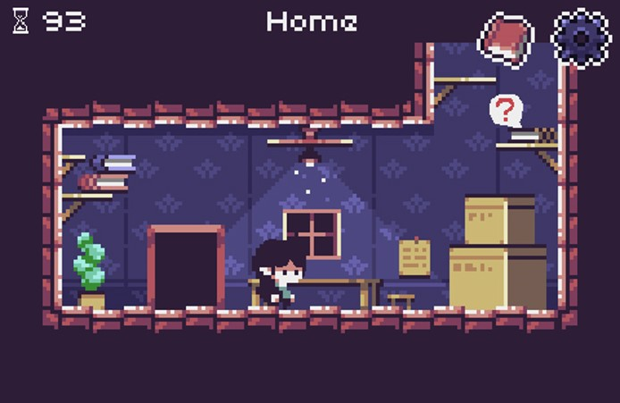
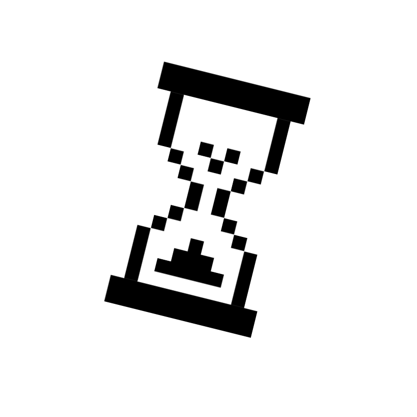
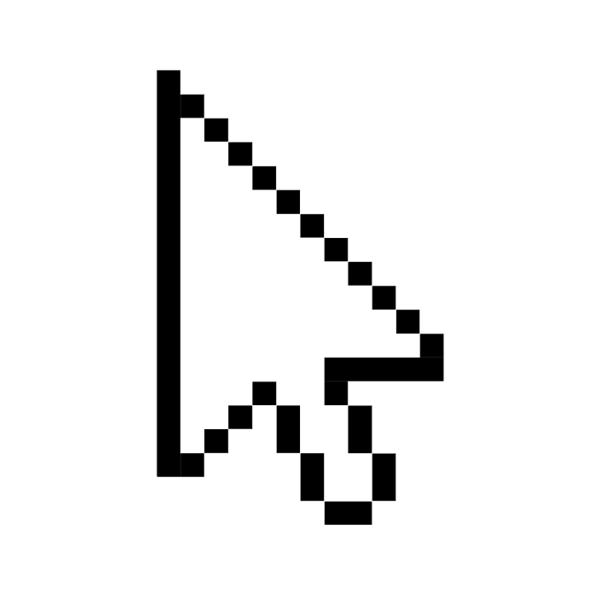
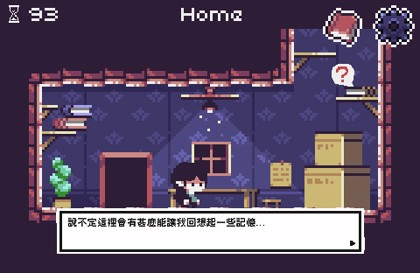
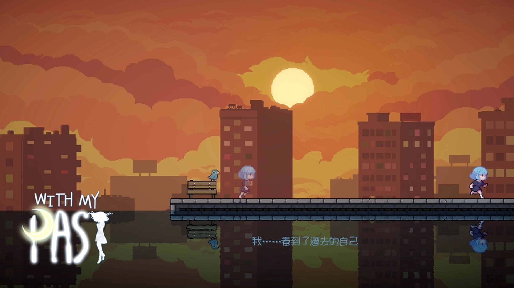

年齡：22
年齡：20
目錄
創作動機
劇情構思
遊戲類型
遊戲流程
遊戲玩法
操作方式
劇情發展
結局
參考資料
許多人會面對親人因病症或年老而失去記憶的情境。這種無助的痛苦引發了我們對於「遺忘」與「記住」的思考。如果愛一個人每天都要從頭開始，這段愛情還能夠被稱為永恆嗎？而正是在這樣的反思中，我們希望透過遊戲來表達這種脆弱但又深刻的情感。
玩家扮演的主角(蓮)罹患了一種罕見的短期記憶喪失症，導致他每天只能記住 24 小時內發生的事情，過了這個時間點，他的記憶將會完全清空。
女友 （靜） 知道這個病情，但依然選擇留在他身邊，並希望他們的愛情能夠突破時間的限制。然而，每一天，對空來說，都是重新認識靜、重新愛上她的過程。
遊戲類型-2D橫向像素風解謎遊戲
採用了像素風格的解謎類型，簡約卻細緻。
玩家將操控主角在一個簡約卻細緻的像素世界中探索，並透過解謎來收集記憶片段，拼湊出主角對女主角的愛與回憶。
每個關卡都是小型場景，需在有限的時間內進行探索，與環境中的物品、人物互動，解鎖與女主角相關的關鍵記憶。
|
|
|
|
男主角：蓮 年齡：22 |
女主角：靜 年齡：20 |

開始介面>開始新遊戲>開場動畫>解謎互動>達成條件>解鎖解局

每一關卡，玩家的記憶會有一個倒數計時條，當時間走到盡頭，主角的記憶將會被清空。玩家需要在有限的時間內做出選擇，透過互動來留下特定的記憶片段，這些片段將幫助主角維持對靜的認識。
這些片段會以「記憶碎片」的形式儲存，但由於記憶有限，玩家必須小心選擇哪些細節最值得記住，以便在下一天恢復記憶時有助於回想起靜。
| 鍵盤控制角色移動 | |
|  | 滑鼠點擊 與物品或場景互動 |

第一章：重新認識的初遇
故事開始於一個普通的早晨，蓮醒來後發現
自己不記得靜，甚至不記得他們的關係。靜耐心地向蓮解釋一切，而玩家需要透過與靜的互動，選擇記住哪些細節，幫助蓮更快適應他們的關係。
例如，靜會展示他們過去一起拍攝的照片，玩家可以選擇記住某張照片中的場景，這樣未來當蓮再次看到這張照片時，他會回想起這段回憶。
第二章：愛情中的考驗
隨著蓮和靜的互動減少，靜開始透露她的壓力和困惑—每天都要重新讓蓮愛上自己，這讓她疲憊不堪。
玩家需要在這章節中尋找關鍵道具，決定是否要記住那些爭吵或痛苦的時刻，抑或是只記住快樂的時光。這些選擇將影響蓮如何看待靜以及他們的關係是否能夠維持下去。
第三章：記憶的終點
蓮的病情加劇，他的記憶保持時間越來越短，從一開始的 24
小時逐漸縮減到僅僅數個小時。玩家必須在短暫的時間內做出最重要的決定，選擇哪些記憶對蓮最為重要。是過去的某個特定瞬間，還是靜的某個笑容或動作？
此時，玩家會面臨時間和情感上的雙重壓力，並最終選擇他們共同的最後記憶。

完美記憶結局
如果玩家在整個遊戲過程中成功選擇並保留了最重要的記憶，蓮將在病情惡化的最後時刻仍能回憶起他與靜的愛情故事。
即使他最終無法維持所有記憶，但卻因為記住了最重要的部分，他內心深處對靜的愛將永遠存留。
遺忘結局
如果玩家無法收集足夠的關鍵記憶，蓮將最終完全忘記靜，並對她感到陌生。
靜會面對一個她已經無法挽回的現實，最後她選擇默默離去，留下蓮一人與失去的記憶為伴。
中立結局
如果玩家選擇了一些重要的記憶，卻忽略了某些關鍵點，蓮會回憶起靜，但這段回憶將模糊不清。
他們的愛情故事雖然沒有消失，但是卻變得支離破碎，最終分崩離析，變成一段遺憾的過去。
 |
 |
| 即使，這份戀情今晚就會從世界上消失 | 往事伴我 |